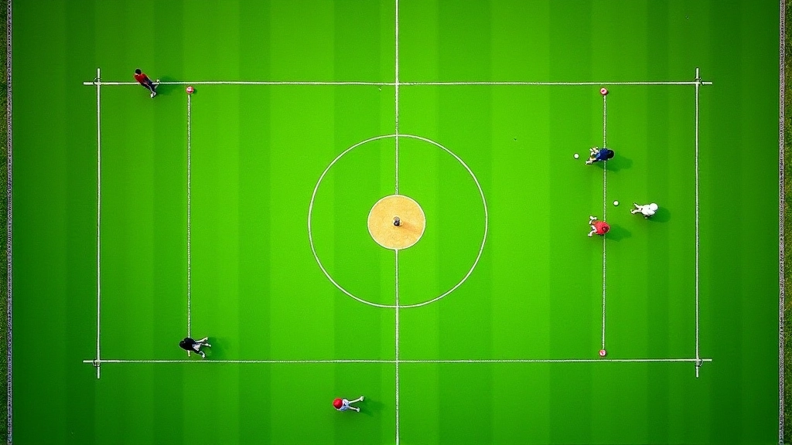

أساسيات ضربة الاقتراب من الطوق للمبتدئين
شرح تفصيلي للحركات الأساسية والموقف الصحيح والقوة المناسبة لتنفيذ ضربة فعالة من البداية.
اقرأ المزيدكيفية حساب القوة المطلوبة لكل مسافة مختلفة، والأخطاء الشائعة التي يرتكبها اللاعبون الجدد عند التعديل.


فريق التحرير والمراجعة
كتبها فريق تحرير استراتيجية الكروكيه، المتخصص في تقديم إرشادات عملية وسهلة المتابعة.
ضربة الاقتراب من الطوق ليست مجرد ضرب قوي للكرة. الحقيقة أنّ معظم اللاعبين الجدد يخطئون في حساب القوة المطلوبة. يستخدمون قوة كاملة في مسافات قريبة، أو قوة ضعيفة جداً في المسافات البعيدة.
المشكلة تكون واضحة بعد أسابيع من التدريب. الكرة إما تتجاوز الطوق بكثير، أو لا تصل إليه. والحل يتطلب فهماً عملياً لكيفية توزيع القوة حسب المسافة والظروف.

في الكروكيه، كل متر تقريباً يحتاج إلى ضبط في القوة المستخدمة. المسافات القريبة (أقل من مترين) تتطلب ضربة خفيفة جداً — قوة بحوالي 20-30% من قوتك الكاملة. بينما المسافات المتوسطة (من 3-5 أمتار) تحتاج إلى حوالي 50-60% من قوتك.
والمسافات البعيدة (أكثر من 6 أمتار) تحتاج قوة أكبر، لكن ليس القوة الكاملة. معظم اللاعبين المحترفين يستخدمون حوالي 70-80% من قوتهم الكاملة. لماذا لا 100%؟ لأن القوة الزائدة تجعل التحكم صعباً جداً، والكرة قد تتجاوز الطوق بشكل كبير.
الخلاصة: السرعة والقوة يجب أن تتطابق مع المسافة. كلما كانت المسافة أقرب، كلما كانت الضربة أخف.
هذا الخطأ شائع جداً بين المبتدئين. يعتقدون أن "ضربة قوية" تعني نفس القوة دائماً. الواقع أن الكرة تحتاج تعديل حسب المسافة. جرّب ضرب كرة من متر واحد بنفس القوة التي تضرب بها من 5 أمتار — ستجد الفرق واضحاً جداً.
العشب الرطب يحتاج قوة أكثر من العشب الجاف. والملاعب المختلفة لها خصائص مختلفة تماماً. إذا كنت معتاداً على ملعب واحد، قد تجد صعوبة في التعديل على ملعب جديد. تذكر دائماً أن تختبر الظروف قبل بدء المباراة.
استخدام 100% من قوتك لا يعني أنك ستصل إلى الطوق بدقة أكبر. بالعكس تماماً. القوة الزائدة تجعل الكرة تفقد التحكم، والضربة تصبح غير دقيقة. المحترفون يعرفون أن التحكم أهم من القوة الخام.
معظم التدريبات تركز على مسافة واحدة فقط. لكن المباراة الحقيقية تتطلب براعة في جميع المسافات. تدريب منظم يشمل 2-3 أمتار، و4-5 أمتار، و6+ أمتار يجعلك أكثر مرونة وثقة.
شرح تفصيلي للحركات الأساسية والموقف الصحيح والقوة المناسبة لتنفيذ ضربة فعالة من البداية.
اقرأ المزيد
تقنيات عملية لتقدير المسافات وحساب الزوايا الصحيحة قبل تنفيذ الضربة بدقة عالية.
اقرأ المزيد
برنامج تدريبي منظم يتضمن تمارين تدريجية وتحديات عملية لتحسين دقتك وثقتك في اللعب.
اقرأ المزيدهناك طرق مثبتة لتحسين التحكم بالقوة. أولاً، استخدم نقطة ارتكاز ثابتة. الكثيرون يحركون أجسامهم بأكملهم أثناء الضربة، مما يجعل التحكم صعباً جداً. ثابت قدميك واستخدم فقط ذراعك وكتفك.
ثانياً، تدرب على التنفس. نعم، التنفس مهم جداً. خذ نفساً عميقاً قبل الضربة، ثم أطلقه ببطء أثناء التنفيذ. هذا يساعدك على البقاء هادئاً والتحكم بقوتك بشكل أفضل.
ثالثاً، استخدم "المشروع" — وهي الحركة الخلفية للعصا. كلما كانت حركتك الخلفية أكبر، كلما كانت الضربة أقوى. هذا يعطيك تحكماً أفضل من محاولة ضخ القوة كله من الذراع.
هذا الدليل يقدم معلومات تعليمية عامة عن تقنيات ضربة الاقتراب من الطوق في الكروكيه. النتائج قد تختلف حسب عمرك، حالتك البدنية، وخبرتك السابقة. التدريب المنتظم والممارسة العملية هما الأساس. إذا كان لديك أي قلق صحي أو إصابات سابقة، استشر متخصصاً قبل بدء أي برنامج تدريبي جديد.
الآن أنت تفهم الأساسيات. لكن الفهم وحده لا يكفي. الكروكيه رياضة تحتاج تدريباً منتظماً. ابدأ بممارسة ضربات من مسافات قريبة جداً — نصف متر واحد — واعمل على الثبات والتحكم. ثم زيادة المسافة تدريجياً.
اطلب من لاعب أكثر خبرة أن يراقبك ويعطيك ملاحظات. أحياناً صغيرة التفاصيل في الحركة يمكن أن تحدث فرقاً كبيراً. وتذكر دائماً — حتى المحترفون يستمرون في التدريب والتطور.
هل تريد تعلم المزيد؟ اطلع على برنامج التدريب المتقدم الخاص بنا.
استكشف برنامج التدريب